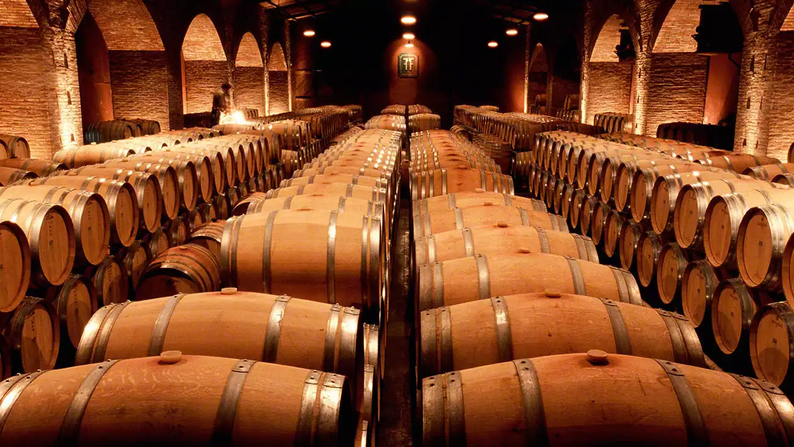

BIENVENIDOS A LA BODEGA FARÍAS
En la Bodega Farías, la pasión por el vino se transmite de generación en generación. Somos una familia compuesta por un padre y dos hermanos, unidos por nuestro amor al arte de la viticultura y el compromiso con la calidad. Nuestra bodega se dedica a ofrecer una selección única de vinos, incluyendo nuestras propias creaciones, cuidadosamente elaboradas para satisfacer los paladares más exigentes.
Cada botella de vino que vendemos refleja nuestra dedicación y experiencia. Desde las uvas seleccionadas hasta el proceso de fermentación y envejecimiento, nos aseguramos de que cada paso sea llevado a cabo con la máxima atención al detalle. En la Bodega Farías, no solo encontrarás vinos excepcionales, sino también una historia familiar que celebra la tradición y la innovación. Te invitamos a descubrir nuestros vinos y a compartir con nosotros la pasión por esta noble bebida. ¡Salud!
NUESTRA HISTORIA
La historia de la Bodega Farías es una historia de sueños, pasión y dedicación. Originarios de Buenos Aires, Argentina, nuestra familia siempre tuvo una profunda admiración por el mundo del vino. Con el deseo de crear algo propio y contribuir a la rica tradición vitivinícola de nuestro país, tomamos la valiente decisión de mudarnos a Mendoza, una de las regiones vinícolas más prestigiosas del mundo.
Hace más de 20 años, comenzamos nuestra aventura en esta tierra bendecida por el sol y el suelo fértil. Con esfuerzo y trabajo incansable, plantamos nuestras primeras vides, aprendiendo y perfeccionando el arte de la viticultura. Cada cosecha fue una oportunidad para mejorar y acercarnos más a nuestro sueño.
Hoy, después de dos décadas de dedicación y pasión, nos enorgullece decir que la Bodega Farías se ha consolidado como una de las 10 mejores bodegas del país. Nuestro éxito es el resultado de un compromiso inquebrantable con la calidad, la innovación y el amor por lo que hacemos.
Te invitamos a conocer y disfrutar de nuestros vinos, que son el fruto de nuestra historia y el testimonio de nuestro esfuerzo y pasión.